Lange Nieuwstraat 62, Utrecht
Café. Restaurant. En een wijnkaart die nooit af is.
Een keuken geworteld in de Franse traditie, bereid met producten van eigen bodem. Goed gevulde glazen, lekkere bordjes, geen chic gedoe. In het Utrechtse Museumkwartier.
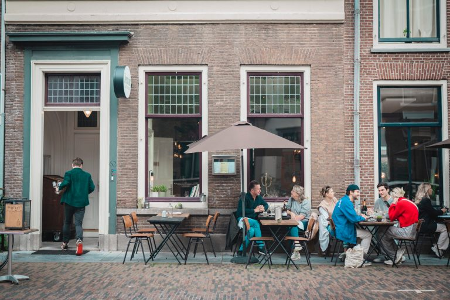
Café
Omdat we willen dat je je welkom voelt, omdat we houden van rumoer en wars zijn van formaliteiten of chic gedoe.
Restaurant
Omdat we dat zijn, met een keuken geworteld in de Franse traditie, maar bereid met producten van eigen bodem, en met een eigentijdse twist.
Wijn
Vooral per fles, met wijnen van heinde en verre, en altijd met een fatsoenlijke opslag.
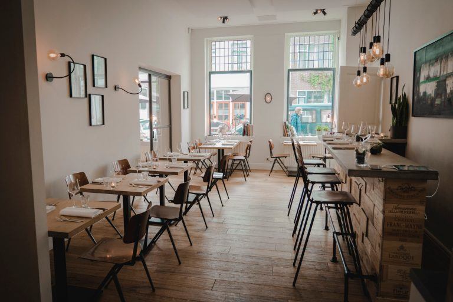
Geen gedoe, maar onvervalste gastvrijheid. Welkom bij Café-Restaurant Terroir.
De kaart van november
We koken op basis van het seizoensaanbod: mooie groentegerechten, dagverse vis en uitgekiende vleesbereidingen. Klassiek, met een eigentijdse knipoog, zonder overbodige liflafjes op het bord.
Onze kaart wisselt wekelijks. Wat hier staat is de kaart van deze week; het kan dus zijn dat er inmiddels iets nieuws op staat.
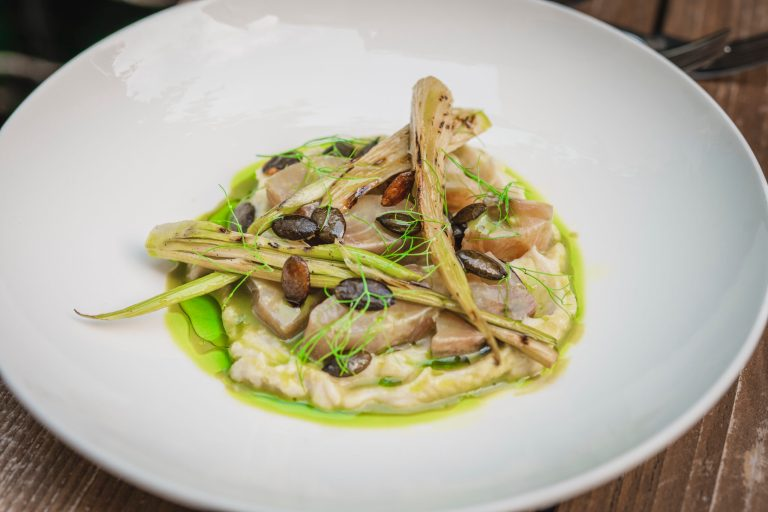
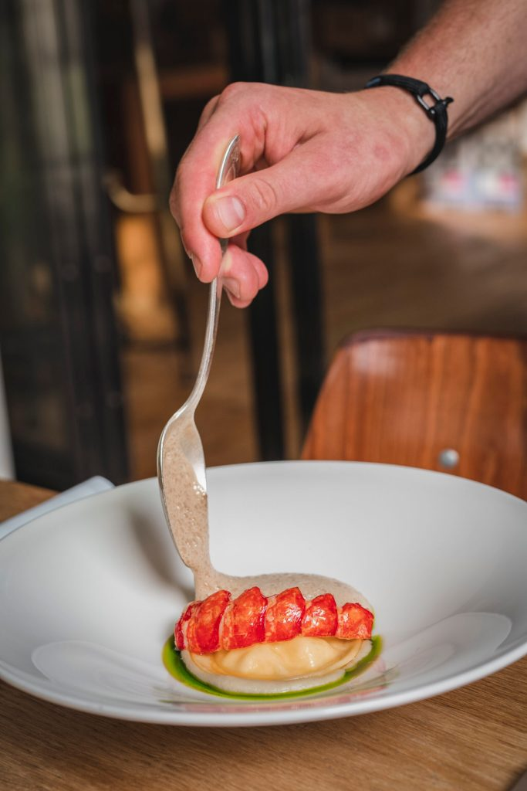
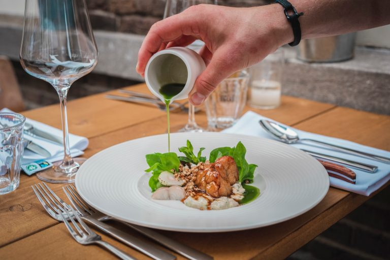
Groente, allergieën en dieetwensen
We werken graag en veel met mooie groente en koken graag vegetarisch. Gezien onze stijl koken we geen veganistische menu’s.
Allergie? Vraag naar onze allergenenkaart en vermeld je allergie bij de reservering. We kunnen alleen garanderen dat we er rekening mee houden als we het 24 uur van tevoren weten.
Met zes personen of meer
Voor gezelschappen vanaf 6 personen serveren we een vast 4-, 5- of 6-gangenmenu, waarbij we rekening houden met dieetwensen en allergieën.
Onze leveranciers
De Bakkert, W&A Fish, Lindenhoff, Rungis, TasteTree, Vanilla Venture, Buitengewone Varkens, Zagt en Moestuin Vollenhoven.
Menukaart als pdfDe wijnkaart
Onze klimaatkasten zijn royaal gevuld met terroirwijnen: wijnen van goede komaf, uit gebieden die wij boeiend vinden, maar vooral van wijnmakers die hun vak verstaan. We schenken voornamelijk per fles, met een uitgebreide sectie halve flessen, zodat we met vaste, eerlijke marges kunnen werken.
Lastig, zo’n grote lijst? Laat je door ons adviseren, het is immers ons vak. Per glas schenken we dagelijks wat wisselende wijnen.
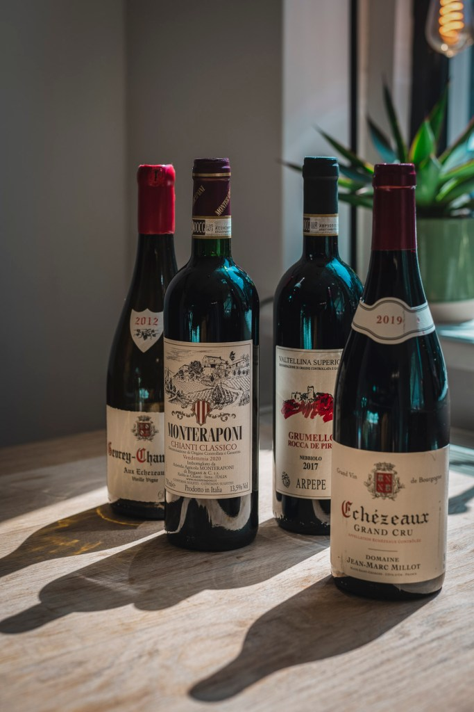
Prijzen per fles in euro. Onze wijnkaart wisselt regelmatig, dus soms is een wijn of jaargang niet (meer) beschikbaar. Vraag ons gerust naar een mooi alternatief. Wijnkaart als pdf
Onze wijnleveranciers
Anfors Imperial, l’Atelier du Champagne, J Bart, Biodivino, Bolomey, De Bourgognespecialist, De Bruijn, Das Keller 030, Eck & Maurick, Henri Bloem, Herman Wines, De Geluksdruif, Janselijn, Jéroboam, De Lange, Margaret Wines, Pieksman, Rieslinghuis, Rhône Value Wines, Smaragd Wijnen, Utregs Wijnhuis, Verkerk Wijnimport, De Vier Heemskinderen, Vida del Vino, Le Vineur, Vleck, VMV import, Wijnkameel, De Wijntherapeut, Van Zegveld Wijnimport en ZekVinos.
Café-Restaurant Terroir wordt aanbevolen door Star Wine List, de gids voor goede wijnbars en restaurants in Utrecht.
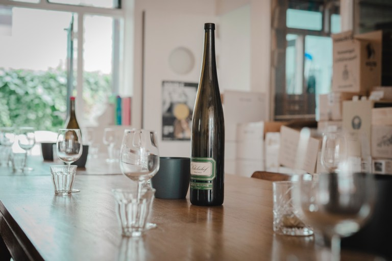
Proeverijen
In ons proeflokaal geven we regelmatig proeverijen en themaproeverijen.
Open wijnproeverij
Iedere derde zaterdag van de maand, om 16.00 uur
Je proeft zes wijnen, inclusief bijpassende snacks, voor €49,50 per persoon. Reserveren gaat via de site van De Proefacademie.
Themaproeverijen
Een avond rond één land, één druif of gewoon een berucht moeilijke wijnquiz. Zo hadden we eerder een Zuid-Afrika-avond, Terroir’s beruchte terrorwijnpubquiz (teams van maximaal vier) en een Syrah-avond met wijnen uit verschillende windstreken.
Het aantal plaatsen is beperkt. Wil je weten wanneer de volgende is, of je inschrijven? Mail naar reserveren@caferestaurantterroir.nl.
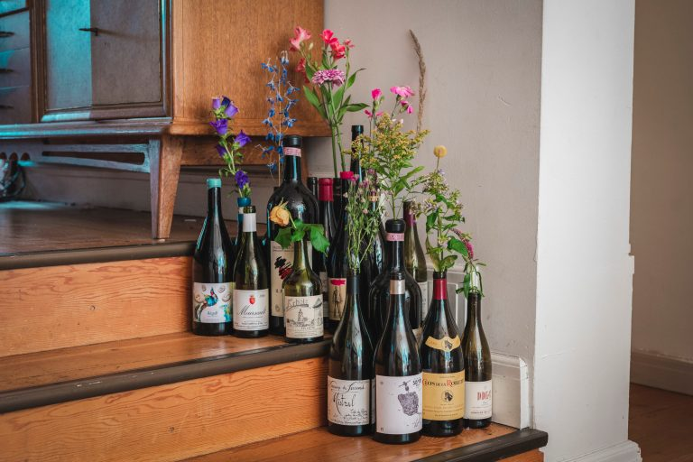
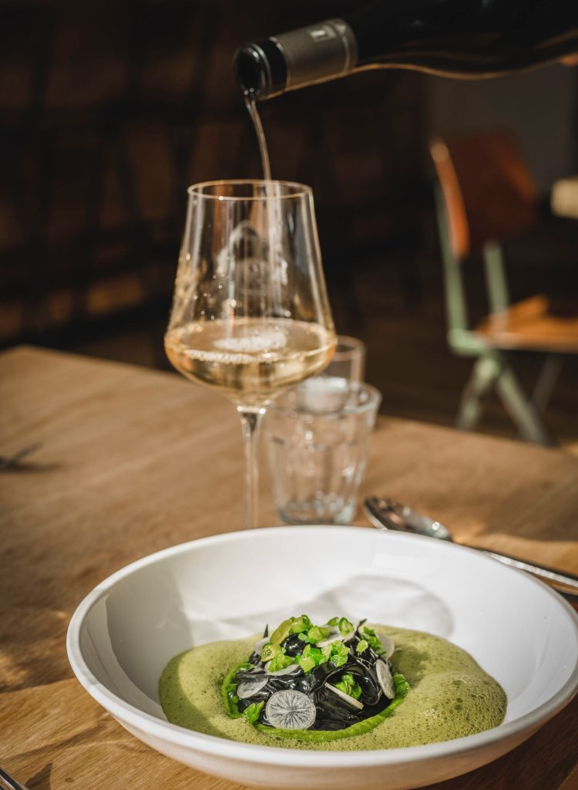
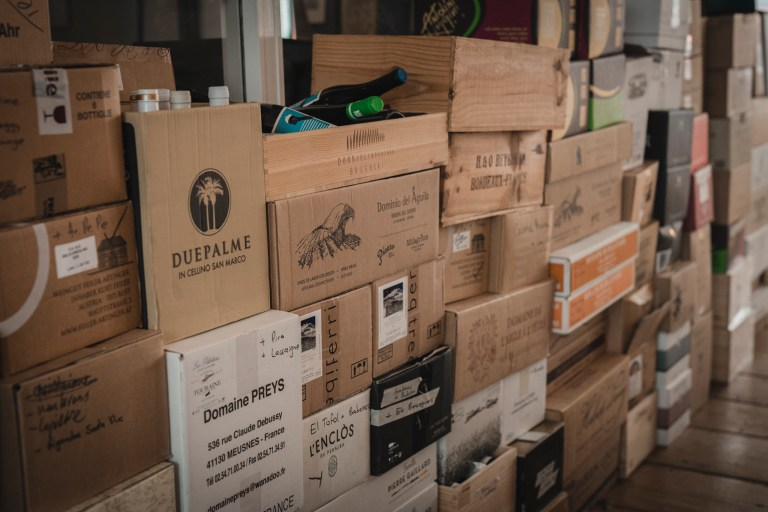
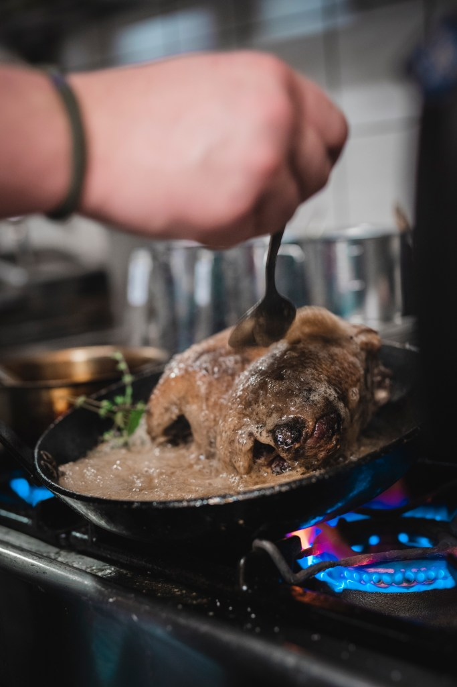
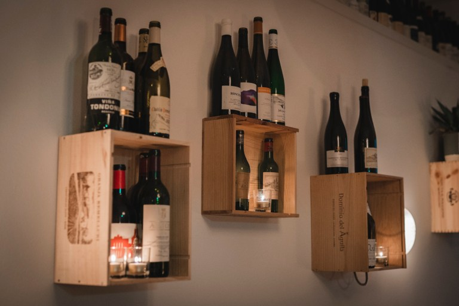
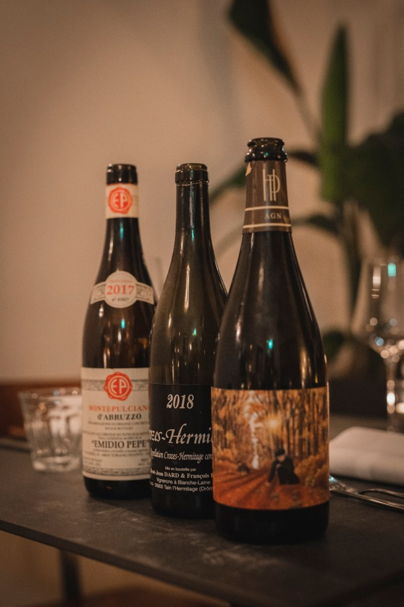
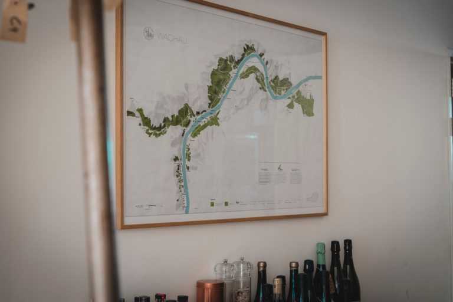
Reserveren
Reserveer online voor maximaal 10 personen. Grotere gezelschappen kunnen we helaas niet ontvangen. Vanaf 6 personen serveren we een vast menu.
Openingstijden
- Maandag
- 17.30 – 23.00
- Donderdag
- 17.30 – 23.00
- Vrijdag
- 17.30 – 23.00
- Zaterdag
- 17.30 – 23.00
- Zondag
- 14.00 – 21.00 late lunch of vroeg diner
Contact en route
Café-Restaurant TerroirLange Nieuwstraat 62
3512 PL Utrecht
- 030 272 2944
- WhatsApp 06 8263 2440
- info@caferestaurantterroir.nl
- reserveren@caferestaurantterroir.nl voor reserveringen en proeverijen
Zo kom je er
Fiets Parkeer je fiets voor de deur.
Bus Halte Universiteitsmuseum (lijn 2) is 1 minuut lopen.
Trein Vanaf Utrecht Centraal ben je er in 10 minuten.
Auto Parkeren voor de deur kan als er toevallig een plekje vrij is. De dichtstbijzijnde parkeergarage is Parkeergarage Springweg, op 7 minuten lopen.
Werken bij Terroir
Op dit moment zijn er geen openstaande vacatures. Een open sollicitatie is altijd welkom op info@caferestaurantterroir.nl.